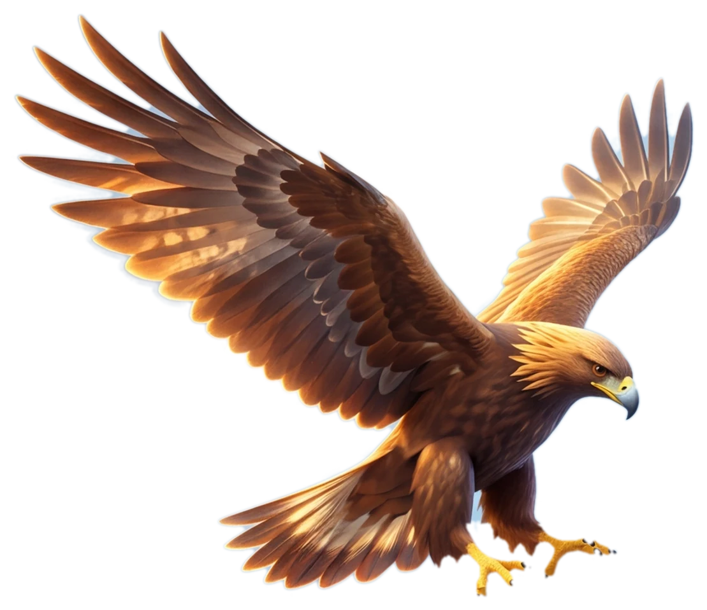

Сервис
фильтрации
интернета
Убираем трекеры и рекламу на твоих устройствах.
Меньше рекламы и трекеров везде: на телефоне, компьютере, в телевизоре. Фильтруем на уровне сети, значит уберём трекеры и рекламу, встраиваемые площадкой. Вживлённую в видео — не уберём.
Что это значит для тебя?Трекеры реже догоняют тебя персонализированной рекламой и меньше о тебе знают, а ты реже видишь то, что хотел бы кто-то другой, чтоб ты видел.
Тугы́р — рифмуется с «мир». По-казахски «тұғыр» — опора, насест, на который садится ловчая птица. Мы — опора для твоего интернета.
Доступ по приглашению. Попасть можно только от того, кто уже с нами. Живой человек на связи, если что-то не работает.